Wobbly Wiggler
Wobbly Wiggler (WW) is a Blender add-on designed to add jiggle simulation on top of animated bones.
Demo of the same animation with and without jiggle
Tired of manually adding secondary motion to your character? Wobbly Wiggler does it for you.
Demo of the same animation with and without jiggle
Location
Find it in the right sidebar of Blender's 3D View under the Tools tab > Wobbly Wiggler panel.
The Tools category can be customized in the WW preferences.
Requires Blender 5.2 or newer.
Demo of jiggle applied to an AutoRig Pro rig. Optional translation and roll jiggle can be toggled. Simulated entirely in Interactive mode.
How To Use - Quick Start
- Enter armature pose mode and select a few bones.
- In the Wobbly Wiggler panel, click the
[+]button to assign jiggle physics. - Press
Run Physics(note that the animation must be playing if you are using 'Animated' mode—see below).
To assign new bones to an existing jiggle group, use the Assign Jiggle to bones button from the WW Menu.
Simulation Modes
Jiggle physics can run in two modes:
- Interactive - Ideal for real-time mouse interaction with jiggle bones. There is no need to play the animation; however, animated simulations will often look choppy in this mode.
- Animated - Functions only while the animation is playing. Useful for rendering final animations.
In Animated mode, a loop icon appears next to the Run Physics button labeled Continuous Simulation. Enable this to prevent the simulation from resetting on every playback loop.
Note: In Interactive mode, the simulation will not work during rendering or action baking. For rendering, switch to Animated mode. For baking, use the built-in Bake Wiggle operator.
Note: Hidden armatures are not simulated, saving processing time in heavy scenes.
Solvers: Verlet and XPBD
WW features two physics solvers. Switch between them using the Solver dropdown at the top of the Wobbly Wiggler panel. Both solvers support all features described on this page.
- Verlet - The default option. Fast and softer in appearance; ideal for organic objects.
- XPBD - Stiffer, featuring more stable collisions; great for cloth and stiff sticks. It is roughly 2-3x slower than Verlet.
The same rig running on Verlet (left) and XPBD (right). Both setups use identical settings, but XPBD appears stiffer.
Sub-steps splits every frame into smaller time steps (yielding better collisions and less over-damping). XPBD also includes Solver Iterations (where higher values mean a stiffer, more converged result). XPBD automatically raises its sub-step count if a bone is sufficiently stiff or short, though this can heavily impact performance, particularly if Scale Invariant Gravity is disabled.
Jiggle Settings
Demo of adjusting mass, stiffness, damping, and gravity in 'Interactive' mode.
Higher stiffness (or lower mass) results in an increased oscillation frequency—this is how physics works.
Scale Invariant Gravity
-
Enabled (Default): Keeps perceived stiffness uniform so that chains of any length sag similarly under gravity.
-
Disabled: More realistic—longer chains sag more due to higher torque. Disabling this may cause XPBD instability on shorter chains, requiring increased sub-steps and reduced performance.
Jiggle Influence
This slider can be animated to mute the jiggle effect on specific frames. For example, in the video below, jiggle is muted at the exact moment of punch impact to make the motion feel snappier.
Left: Full jiggle influence. Notice how the spine and arm movements feel overly soft and damped because the jiggle over-relaxes the motion.
Right: Jiggle influence is muted at fist impact and at the beginning of the spine moving forward, yielding a snappier motion.
Wind
You can use an empty object with a Blender Wind force field as your wind source (created via the Add Wind Object button in the Wind panel). Wind strength and direction can both be animated, and wind functions in both Interactive and Animated modes.
Demo showing how wind affects jiggle bones (older version; the new version is showcased in the video below).
Wind settings:
- Strength - The push applied to a stationary bone.
- Noise Amplitude - Determines the intensity of wind gusts. Strength varies dynamically as
Strength * (1 + Noise Amplitude * noise), and direction sways laterally. A value of 0 indicates steady wind. - Noise Seed - Generates a unique sequence of gusts.
- Temporal Frequency - Noise periods per second, controlling how quickly gusts change and propagate through the rig.
- Spatial Frequency - Noise periods per meter, dictating the physical size of gusts in space. A value of 0 means a single uniform gust affects the entire rig, while higher values create localized gusts.
- Drag - Dictates how strongly air speed pushes the bones. Higher values make bones track wind more closely, causing a chain caught in strong wind to settle rather than swing indefinitely.
Using Wind Influence, you can control how strongly wind impacts a specific jiggle group, allowing you to disable wind effects on elements like fingers.
New, more realistic wind introduced in WWiggler 4.0. It is no longer just simple noise applied with same strength everywhere
Translation Jiggle
Demo of translation jiggle applied to the character's root bone (pelvis).
Note: Translation jiggle can only be assigned to unconnected bones (those without a parent or with a disconnected parent).
Roll Jiggle
Enables roll axis wiggle, twisting bones around their local Y-axis.
Demo of roll jiggle on the character's root bone (pelvis).
Maximum Angle
Restricts the maximum angle of jiggle bone rotation. Set to 0.0 to disable the limit entirely.
Demo of applying a maximum angle limit on finger bones to prevent excessive spreading.
FK Mode (Use Rotation Jiggle Off)
Disabling Use Rotation Jiggle enters a simplified FK mode where bones follow their animation while retaining the ability to collide with other bones or meshes.
Use this when you want fingers to wrap around a collider without introducing jiggle behavior.
FK Strength specifies how strictly bones adhere to their underlying animation. At 0.0, bones remain pinned to their original positions (they appear to be stuck in a place).
Finger bones wrapping around a collider in FK mode with 'Use Rotation Jiggle' disabled.
Collisions
Wobbly Wiggler supports both bone-to-bone and bone-to-mesh collisions:
- Bone-to-bone collisions utilize capsules as contact shapes, meaning the entire body of the bone collides.
- Bone-to-mesh collisions use the bone tip as the sole contact point against the mesh.
Note: You can toggle these shapes via the WW Menu under
Capsule Collisions.
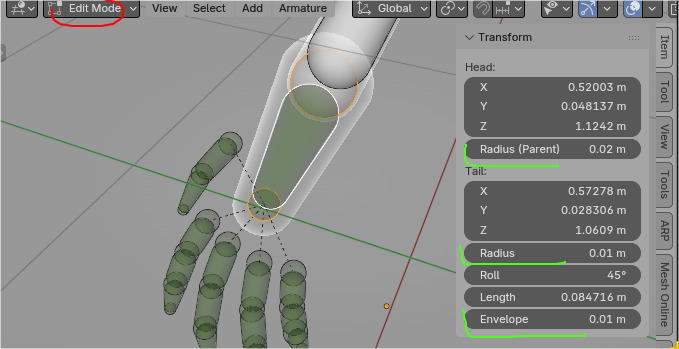
Bone collision shapes are derived from head/tail radius combined with envelope size.You can edit envelopes across multiple selected bones simultaneously using the Bone Radius and Envelope sliders shown below:
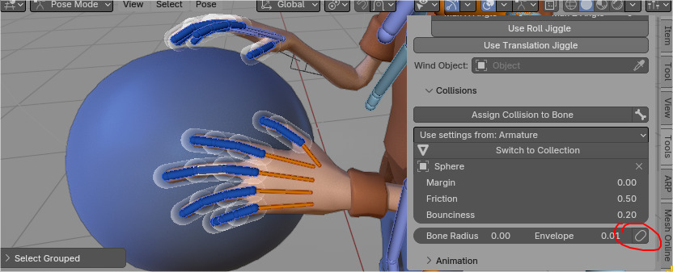
Click theCapsule icon to visualize bone envelopes. Click it again to revert bone rendering to its default state.
Collision Settings
Bone-to-bone and bone-to-mesh collisions rely on comparable parameters:
- Friction - Measures how much lateral speed a bone loses when sliding across a surface.
- Static Friction - Anchors a resting bone in place, preventing it from creeping down slopes or sliding away under minor forces until a threshold is reached (0 = off).
- Bounciness - Determines how much impact velocity is reflected off a surface (0 = none, 1 = full).
- Stickiness (bone-to-mesh only) - Acts as a glue effect, pulling contact tips back toward surfaces to resist detachment and bend chains toward meshes while sliding.
A chain sliding off a capsule surface despite high dynamic friction; increasing Static Friction resolves this.
Stickiness helps to glue bones to mesh surfaces.
Bone-to-Bone Collisions
Bone-to-Bone Panel
This panel lets you assign a bone as a collider so other elements can bounce off it. By default, only bones within the active Jiggle Group can interact with these designated collider bones (stored in the current group's collider list).
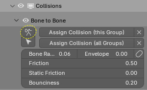
The Yellow button helps us to assign collision to bones from other rigs (see section below)The top row of buttons handles collider management for the active jiggle group:
- Assign Collision: marks selected bones as colliders for the active jiggle group.
- X: Removes collision from selected bones within the active group. Shift-clicking removes all collider bones from the active group.
The bottom row offers matching functionality applied globally to all jiggle groups. This configuration allows for setups such as:
- Restricting skirt jiggle bones to collide with leg bones while keeping leg bones from self-colliding.
- specific bones can affect all jiggle groups, for example on spine bone you could use 'Assign Collision (all Groups)' and this way all jiggle bones will be pushed out of character torso,
When pose mode symmetry is active, these operators will automatically assign/remove collision from bone on the other side of the rig.
- Arrow icon - Selects the collision bones belonging to the active group.
Colliders from Other Armatures
To set up collisions with bones originating from a separate armature, click the armature icon: Edit Colliders From Other Armatures (outlined in yellow on image above).
Setup procedure for collisions involving separate armatures.
Bone-to-Mesh Collisions
The configuration is straightforward: select your mesh object (or collection), tweak parameters, and you are done.
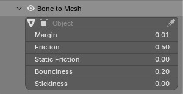
Stickiness is the only new parameter compared to bone-to-bone configurations.
Example demonstration of bone-to-mesh collisions.
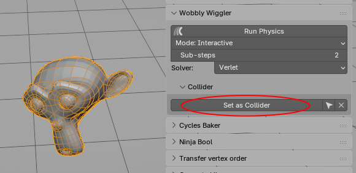
Setting up a global collider mesh to influence all Jiggle Groups simultaneously.Bone Connections
A connection functions as a stretchy, rubber-like link pulling two bones together. Similar to Jiggle Groups, you can establish multiple connection groups—each with dedicated parameters—and assign selected bones to them.
Connections Panel
Connections act as spring forces pulling two bone tips closer. Use them for skirts, bending bows with hand bones, or preventing separate chains from drifting apart. Note that connections exclusively pull and never push bones apart.
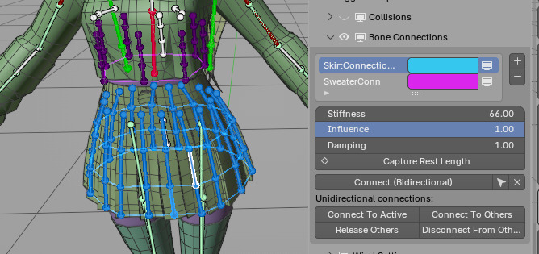
- Stiffness and Damping - Define spring rigidity and damping characteristics.
- Influence - Animate connection strength dynamically (a value of 0 deactivates the group's connections).
- The monitor icon in the group list mutes an individual group, while the header monitor icon mutes all connections globally.
To quickly connect multiple bone chains, select them and click Connect (Bidirectional). If the selected chains run parallel to each other (like fingers), connections are created across them in columns. If they form a circle (like a skirt), the connections loop automatically into a closed ring.
A skirt composed of independent chains held together via cross-connections between neighboring elements.
Rest Length
Every connection keeps the distance between two bones at the moment of creation, pulling them back together whenever they drift.
Capture Rest Length recalibrates active group distances based on the current pose across all connection formats (bone-to-bone, cross-armature, mesh, or empty objects).
Two and One-Way Connections
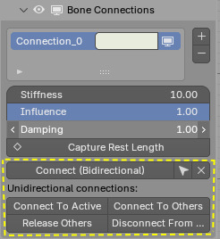
-
Two-Way Connections are created using
Connect (Bidirectional). Both bones pull each other with matching strength—ideal for most standard setups like skirts, shirts, or fingers. -
One-Way Connections - A configuration where a single bone is pulled toward an unaffected anchor. The moving bone is designated as the pulley, while its destination is the anchor. Anchors can be non jiggle bones or other armature bones.
Connect To Active- Sets the active bone as the anchor while pulling all other selected bones toward it (requires at least two selected bones).Connect To Others- Pulls the active bone toward the the other selected bones (disabled if the active bone is not a jiggle bone). If a mesh or empty object is selected alongside the armature, this binds the bones to it instead (see below).
Example of a one-way connection from a bow to a finger. The finger pulls both bow tips, but the bow does not affect the finger
Release Others/Disconnect From Others- Converts connections into one-way links by removing pull forces or glue bindings. Inactive when no valid targets exist.Break Connections(the X icon) - Severs links between selected bones. HoldingShiftstrips every connection in the active group.Select Connected Bones(the arrow icon) - Selects elements linked to your current selection.
When X-Axis Mirror is enabled on the armature, these operators automatically mirror changes to corresponding .L / .R bones.
Note: For connections between two separate armatures, select bones from both models simultaneously in multi-object Pose Mode. These cross-rig links operate as one-way structures per rig, where
Connect (Bidirectional)creates pulleys on both sides to sync movement, andCapture Rest Lengthpreserves matching scale bounds.
Glue to an Object
Jiggle bones can be anchored directly to mesh surfaces via Connections:
Gluing selected jiggle bones to a mesh surface.
To glue bones to a mesh:
Select your target mesh (or empty object) followed by your armature, enter Pose Mode, highlight your target jiggle bones (such as fingertips), and press
Connect To Others. Every chosen bone will pull toward the nearest mesh point (or empty location) while retaining initial distance offsets. These connections dynamically track deforming or rigged meshes.
Physics Presets
You can configure and manage multiple physics presets in Wobbly Wiggler using the Presets button highlighted in red below.
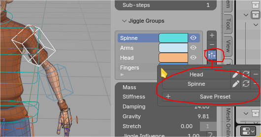
The Presets popover allows you to add, delete, or refresh physics presets, alongside renaming the active preset via the pen icon.
Baking Jiggle Animation
WWiggler includes a built-in operator for baking live jiggle simulations into standard animation action data.
Baking jiggle physics on top of a 'Jump' action into a separate action named Wiggle, keeping keyframes entirely independent from the original animation.
Baking Options
This operator is similar to Blender's native Bake Action tool with few extra, jiggle-specific, simulation parameters.
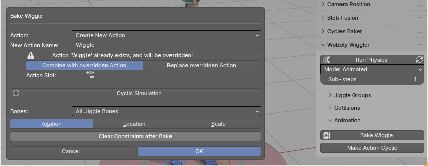
-
Action: Generate a fresh action (
Create New Action) or select an existing one from the dropdown. -
New Action Name Defines the name for the generated action (default is
Wiggle). A warning appears if an action with that identifier already exists. -
Combine with overridden Action / Replace overridden Action Appears when baking into an active action: choose to merge new jiggle keyframes or clear existing keys to write exclusively simulation data.
-
Continuous Simulation: Similar to the scene's global 'Continuous Simulation' switch. When enabled, simulation states carry over smoothly when animations loop from final to initial frames. When disabled, simulation resets at timeline starts to maintain identical playback runs.
- Warmup Cycles: When 'Continuous Simulation' is active, plays the animation N times prior to final baking so simulations start from a settled state rather than dropping cold.
-
Bones: Filters which bones undergo baking.
Active Jiggle Group Bones: Targets bones assigned to the active group.All Jiggle Bones(default): Targets bones across all jiggle groups.Selected Bones: Targets explicitly selected bones regardless of jiggle status.All Bones: Targets every bone in the armature.
-
Channel Types (
Rotation/Location/Scale) Selects which transformation data channels receive keyframes (Rotation captures jiggle movement, Location handles Translation Jiggle, and Scale for stretch slider). -
Clear Constraints after Bake Automatically removes wiggle constraints from baked bones upon bake completion.
-
Pose Reset: Dictates pose states prior to bake initiation.
Do Nothing: keep the current pose..To Rest Pose: Clears all bone transforms.To Animation Pose(default): Reverts bones to their animated pose.- Reset Unkeyed Bones (under
To Animation Pose): bones without keyframes lack animated pose to return to; ON(default) - their transforms are cleared too, OFF - they keep their pose.
-
Decimate Simplifies baked curves post-simulation (0 preserves every keyframe, 1 applies max reduction) using Blender's curve decimation algorithms.
Note: When re-baking over a previously generated Wiggle action, verify that
Replace overridden Actionis selected to prevent stacking new simulations on top of older baked layers.
Make Action Cyclic
An operator designed to seamlessly blend the start and end frames of an animation. It uses advanced blending covering position, angle, position velocity, and angular velocity for realistic results—based on the inertialization systems used in Gears of War. It works with any action, not just those generated via Wobbly Wiggler.
An un-matched punch animation end is smoothed into its starting frame using the 'Make Action Cyclic' tool.
Make Cyclic - Options
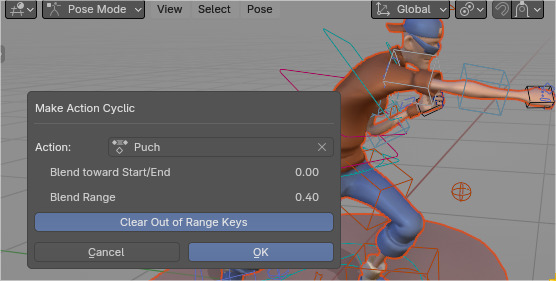
- Action: Select the target action to make cyclic
- Blend toward Start/End: 0 blends end keys into the start; 1 blends start keys into the end; 0.5 splits blending evenly
- Blend Range: Sets transition length in frames (longer ranges create smoother loops but affect larger portions of the animation).
WW Menu
Located next to the jiggle group list, the Wobbly Wiggler menu contains several useful operators.
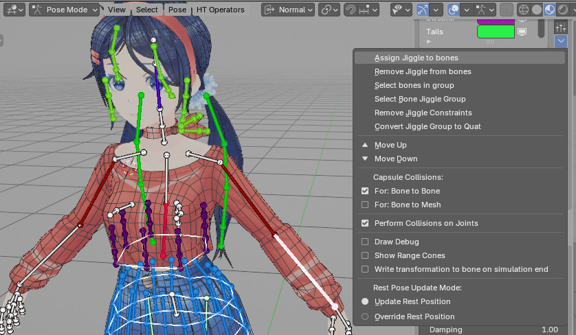
Character: Mita from MiSide (credits)-
Assign Jiggle to bones Applies the active physics preset to selected bones.
-
Remove Jiggle from bones Clears jiggle physics assignments from selected bones.
-
Select bones in group Selects all bones linked to the active jiggle group.
-
Select Bone Jiggle Group Makes the active bone's associated group the primary selection in the UI list.
-
Remove Jiggle Constraints Deletes jiggle-related constraints from the active jiggle group Constraints are kept when the simulation stops, so this is the way to remove them.
-
Convert Jiggle Group to Quat Converts rotation formatting for group bones into quaternion mode.
-
Move Up / Move Down Reorders jiggle groups within the UI list hierarchy.
-
Capsule Collisions
For: Bone to BoneandFor: Bone to Mesh: use full bone capsule geometry instead of just tips for collisions. See Collisions. -
Draw Debug Toggles visual debugging overlays for physics diagnostics.
-
Write Jiggle on Simulation End Bakes live simulation outputs directly into transformations when simulations conclude.
-
Rest Pose Update Mode Determines behavior when manually editing bone positions during paused simulations.
Override Rest Positionkeeps the pose you set.Update Rest Positionapplies your edit to the animated pose of the bone, so the animation keeps the change.
Credits
Character featured in the WW Menu image: "Mita Animation | MiSide Menu" (https://skfb.ly/pMIWx) by Ayanokoji031, licensed under Creative Commons Attribution (http://creativecommons.org/licenses/by/4.0/).